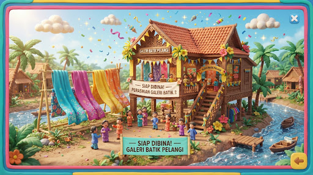
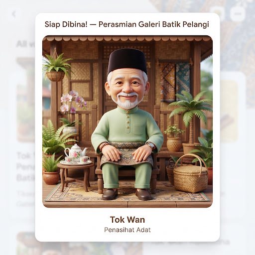
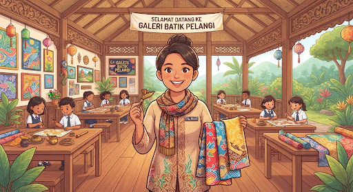

celebration
Tahniah Wira Adam! • Perasmian Diraja
auto_awesome
star
star
star
Galeri Batik Pelangi
Siap Dibina!
Plot 4 Lembah Rimba Kenanga kini berseri dengan warisan seni kraf warisan bangsa!

verified
Rasmi Dibuka!
flag
Tahap 1
content_cut
Pita Perasmian Emas
Gunting cilik bersedia dipotong!

👴🏽
Tok Wan & Penduduk
Ketua Kampung
“Syabas Wira Adam! Dengan terbinanya Galeri Batik Pelangi ini, warisan canting bunga raya dan seni batik nenek moyang kita kini mekar berseri di Lembah Rimba Kenanga!”
card_giftcard
4 Ganjaran
Hadiah Perasmian Desa
holiday_village
+50
Kemakmuran
monetization_on
+100
Syiling Emas
grade
+25
Bintang Ilmu
palette
Corak Kelarai
Buka Modul
payments
Aktif
Kutipan Pelancong Diaktifkan
+15 Syiling / jam secara automatik
explore
Misi Baharu Menanti!

Canting Corak Diraja Pertama
Cikgu Merbok: “Mari masuk dan cuba alat canting tembaga baharu bersama rakan sekampung!”